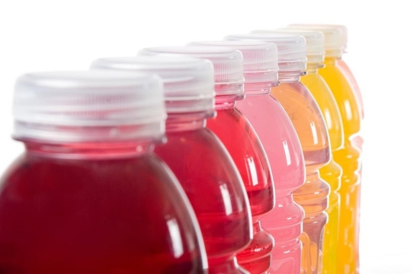

Bienvenidos a nuestro primer blog de muchos más de Nutricitius 42K , los cuales tendrán el objetivo de informar acerca de los diferentes aspectos nutricionales, fisiológicos, etc.. basados en evidencia científica relacionados a los deportes de resistencia, especialmente en el Maratón y al interés de nuestra audiencia.
Un punto importante que debemos conocer es que el cuerpo humano está constituido del 45 al 75% de agua, dentro del cual, el músculo, es el tejido que contiene mayor porcentaje de este líquido vital, por lo que llegar a un estado de deshidratación cambiará la forma en la que nuestro sistema muscular trabaja en situaciones habituales, pero con mayor impacto en el deporte.
En la actualidad uno de los principales factores de riesgo asociados a la disminución del rendimiento deportivo, tanto en entrenamientos como en competencias, es la deshidratación, lo cual se correlaciona a su vez con mayor prevalencia de lesiones deportivas y una inadecuada recuperación.
Cuando una persona pierde más del 2% del peso corporal derivado de la sudoración, incrementará la percepción del esfuerzo durante los entrenamientos/competencias, mayor utilización de glucógeno muscular ante un menor esfuerzo, limitando la fuente de energía para poder incrementar la velocidad en la etapa final de la carrera. Los principales factores que influyen en la sudoración son la composición corporal, la condición física, el proceso de aclimatación del cuál hablaremos en otro blog, condiciones ambientales, altimetría y el uso de equipo especializado dependiendo de la disciplina deportiva. Una de las ventajas que tienen los deportes de resistencia es que, ofrecen la oportunidad de ingerir líquidos durante las competencias. El escenario “ideal” para mantener un estado de hidratación óptimo, sería que no se observaran pérdidas en el peso, antes y después de entrenar, por lo que, si una persona usualmente pierde 2 L de sudor por hora, tendrá que consumir 2 L de líquidos por hora, esto fisiológicamente es muy complicado que pase, principalmente por la velocidad del vaciado gástrico, que no permite absorber más de 500 a 800 ml de líquidos por hora, si se trata de una persona que entrena el tracto gastrointestinal constantemente, podrá absorber hasta 1200 ml por hora.
 Las bebidas isotónicas llamadas también bebidas deportivas deben cumplir con estas características; tener una osmolaridad muy similar a la de sangre para que facilite su absorción de 280-330 mOsm/L, con un contenido de sodio de 1150-1400 mg/L (.5-.7 g/500ml), 6-9% hidratos de carbono de rápida absorción, glucosa, maltodextrina, sacarosa, fructosa, etc.Usualmente, estamos acostumbrados a consumir líquidos con base en la sensación de sed, el problema está, en que la sed, es un estímulo tardío de deshidratación, como ya vimos, las recomendaciones internacionales refieren que la disminución del rendimiento deportivo asociado a la deshidratación sucede cuando perdemos más del 2% del peso corporal. Para estimar la cantidad de líquidos que se pierden por hora en el entrenamiento o en la competencia, se debe calcular la tasa de sudoración, prueba muy sencilla de realizar, que consta de 3 variables, el peso antes y después de entrenar, la cantidad de líquido que se consume durante el entrenamiento y el tiempo de duración de la sesión de entrenamiento, teniendo resultados distintos dependiendo de los días y los entrenamientos.
¿Qué nos dice la evidencia científica acerca de la deshidratación?
Estudios científicos han determinado dentro de la prueba de maratón, que los atletas que llegan en los primeros lugares muestran tasas de sudoración mayores a los corredores menos entrenados, lo que se puede resumir en que los corredores más entrenados suelen sudar más, por ende, deberían consumir mayor cantidad de líquidos, una de las principales barreras que existe para no llegar a la recomendación de ingestión de líquidos suele ser la disponibilidad de bebidas y la presencia de malestar gastrointestinal. La mala notica es que, la presencia de malestar gastrointestinal dentro de la competencia es ocasionado por consumir mayor cantidad de líquidos que podemos absorber o por la falta de entrenamiento del tracto gastrointestinal, lo bueno, es que el tracto gastrointestinal nos permitirá generar adaptaciones para poder absorber mayor cantidad de líquidos sin ningún malestar, lo cual nos va a permitir mantener o mejorar nuestro rendimiento. Lo cual nos va a permitir mantener o mejorar nuestro rendimiento, por lo que se debe entrenar el tracto gastrointestinal durante los entrenamientos.
La recomendación general se basa en consumir 4 horas antes de una competencia de 5 – 7 ml por cada kg de peso, de líquidos, si se presenta algún signo de deshidratación 2 horas antes de la competencia como labios secos, sensación de sed, se debe consumir de 3 – 5 ml por cada kg de peso. Por ejemplo, si se trata de una persona que pese 70 Kg, deberá consumir 350 ml a 490 ml 4 hrs previo a un entrenamiento o competencia, si esa persona después de 2 hrs sigue teniendo sed, tiene labios secos o no ha podido ir al baño, deberá consumir 210 ml a 350 ml de líquidos.
Importancia de un plan individualizado
Al final del día, estas recomendaciones son generalizadas, ya que existen diferencias interindividuales, algunos deportistas suelen perder más líquidos de lo normal, pero no pierden tanto sodio, o lo contrario, no pierden tantos líquidos pero la cantidad de sodio que pierden suele ser excesiva.
Lo recomendable sería que un experto en el tema, pueda hacer diferentes pruebas y con base en los resultados crear una estrategia de hidratación para el día a día contemplando las horas y el número de sesiones de entrenamiento que se estén realizando, y esto toma más importancia en pruebas de medio fondo y fondo.
Nuevas tendencias sobre la hidratación
Actualmente, investigadores de países desarrollados, se encuentran trabajando en desarrollar protocolos de deshidratación en ciertas partes de la competencia, donde se pueda generar ventaja competitiva. ¿WTF? Sí, así como lo lees, si bien hasta ahorita hemos analizado las desventajas de la deshidratación en el rendimiento deportivo, se sabe que cuando observamos pérdida de peso derivado de la sudoración, fisiológicamente mejorará el VO2MAX, el cuál sus unidades están dadas sobre ml/kg/min, y esta se considera como la capacidad aeróbica máxima, en otro blog, hablaremos al respecto de esta variable, pero para dejar las cosas lo más sencillo posible por ahora, el VO2MAX es una de las principales variables fisiológicas medibles para analizar la mejora del rendimiento. Por ejemplo, Imaginemos que una persona inicia la prueba del maratón con un peso de 70 kg y un VO2MAX de 60 ml/kg/min (expresado en su forma relativa) , y en el km 25, presenta una pérdida del 2% del peso corporal, teniendo un peso de 68.6 Kg, afectará al VO2MAX ya que pasará de tener 60 ml/kg/min a 61.2 ml/kg/min, simplemente por la pérdida de peso, ya que el peso es una variable la cual expresa el VO2MAX, por lo que si se compite en una ruta muy ondulada, se podría buscar esta deshidratación CUANTIFICADA y CONTROLADA en las pendientes más pronunciadas, lo cual nos permitirá tener mayor cantidad de oxígeno disponible. Ahora, este tipo de protocolos siguen en investigación y aún no hay resultados concluyentes. Lo mejor siempre será, acudir con los expertos en el tema de la nutrición deportiva, como Nutricitius 42K, acércate con nosotros y conócenos.